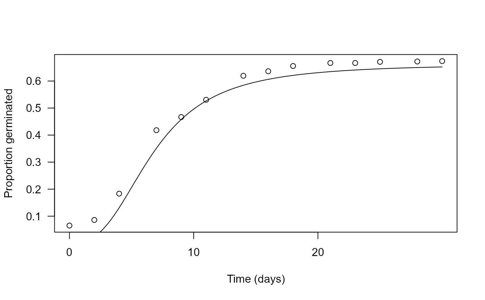

Germination of Eryngium sparganophyllum
Eryngium.sparganophyllum.RdGermination data from an experiments investigating the effect of different concentration of gibberellic acid on germination of Eryngium sparganophyllum seeds. Two datasets are provided: one resembling how data are entered in the first place ("Eryngium.sparganophyllum0") and one formatted and ready-to-use for the statistical analysis ("Eryngium.sparganophyllum")
Format
A data frame with 583 observations on the following variables.
Treata factor with 15 levels denoting the concentration of gibberellic acid (in ppm)
Typea factor with two levels denoting the type of treatment (gibberellic acid or temperature)
Daya numeric vector recording time (in days) since the beginning of the experiment
Germa numeric vector of counts of germinated seeds
Starta numeric vector of starting time points of monitoring intervals
Enda numeric vector of ending time points of monitoring intervals
Germinateda numeric vector of counts of germinated seeds in a given interval
Repa numeric vector corresponding to the replicated sub-experiments; it is only a unique enumeration for the dataset "Eryngium.sparganophyllum"
References
Wolkis, D., Blackwell, S., Kaninaualiʻi Villanueva, S. (2020). Conservation seed physiology of the ciénega endemic, Eryngium sparganophyllum (Apiaceae). Conservation Physiology, 8, coaa017. https://doi.org/10.1093/conphys/coaa017
Examples
library(drc)
## Displaying the data
head(Eryngium.sparganophyllum)
#> Day Treat Type Rep Start End Germinated
#> 1 2 GA3.0 GA3 GA3.GA3-0.1 0 2 0
#> 2 2 GA3.0 GA3 GA3.GA3-0.1 2 4 0
#> 3 4 GA3.0 GA3 GA3.GA3-0.1 4 7 0
#> 4 7 GA3.0 GA3 GA3.GA3-0.1 7 9 1
#> 5 9 GA3.0 GA3 GA3.GA3-0.1 9 11 1
#> 6 11 GA3.0 GA3 GA3.GA3-0.1 11 14 0
## Fitting an event-time model for germination
Eryngium.m1 <- drm(Germinated ~ Start + End, data = Eryngium.sparganophyllum,
fct = LL.3(), type = "event")
#> Warning: longer object length is not a multiple of shorter object length
#> Warning: longer object length is not a multiple of shorter object length
#> Warning: data length [1166] is not a sub-multiple or multiple of the number of rows [14]
#> Warning: longer object length is not a multiple of shorter object length
#> Warning: longer object length is not a multiple of shorter object length
summary(Eryngium.m1)
#>
#> Model fitted: Log-logistic (ED50 as parameter) with lower limit at 0 (3 parms)
#>
#> Parameter estimates:
#>
#> Estimate Std. Error t-value p-value
#> b:(Intercept) -2.715614 0.126975 -21.387 < 2.2e-16 ***
#> d:(Intercept) 0.663221 0.018812 35.254 < 2.2e-16 ***
#> e:(Intercept) 6.698683 0.215910 31.025 < 2.2e-16 ***
#> ---
#> Signif. codes: 0 '***' 0.001 '**' 0.01 '*' 0.05 '.' 0.1 ' ' 1
## Plotting the fitted germination curve
plot(Eryngium.m1, xlab = "Time (days)", ylab = "Proportion germinated", log = "")
